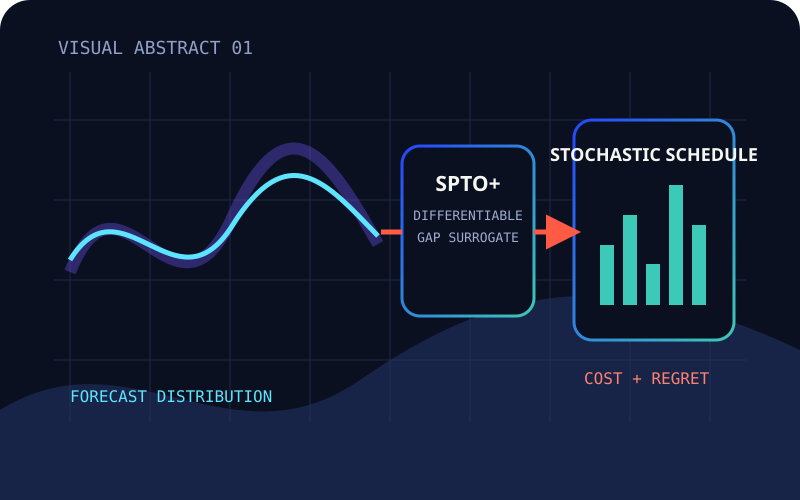
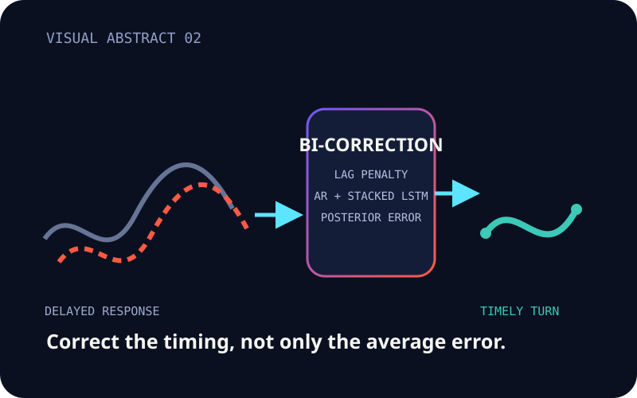
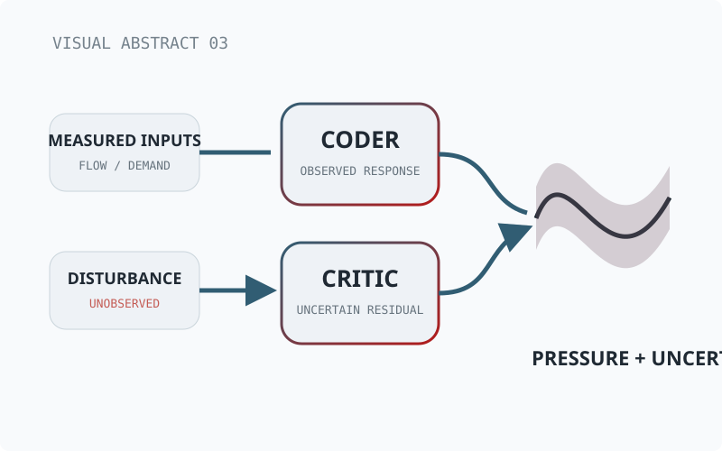
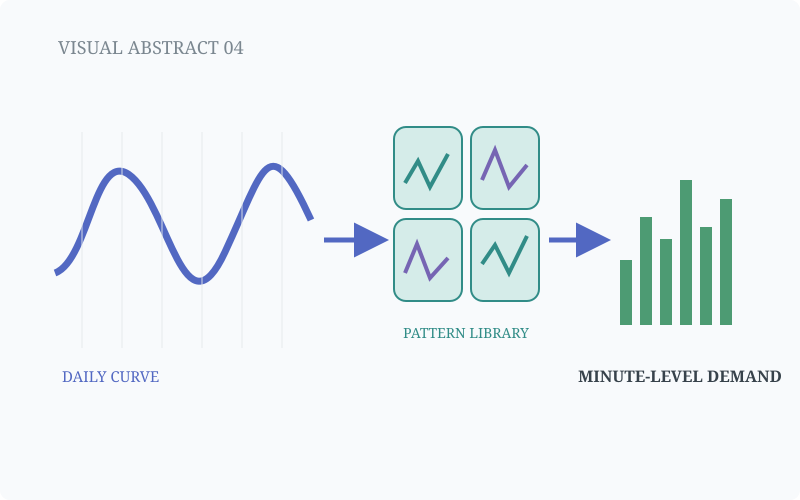
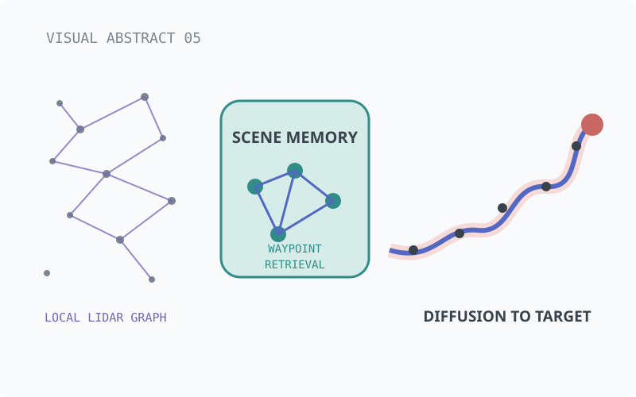
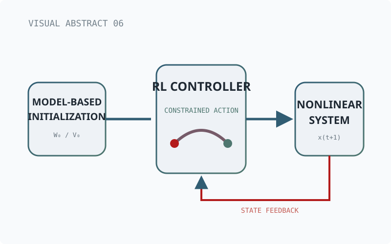
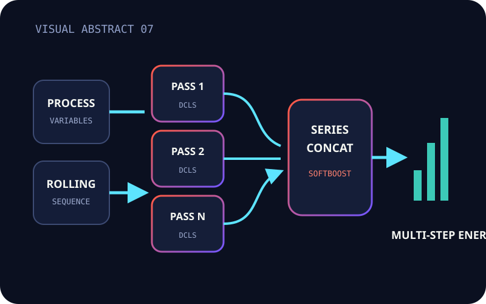
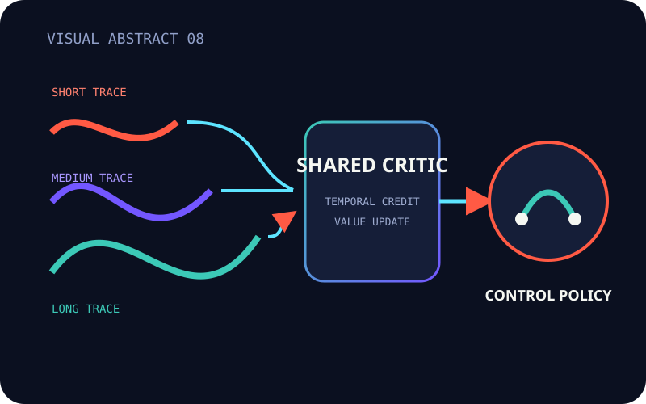
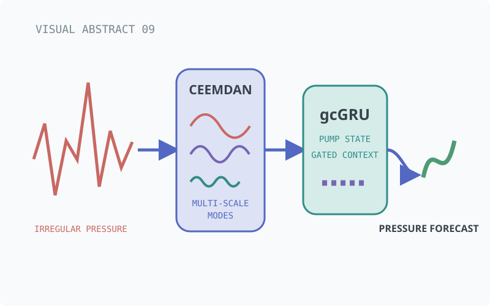
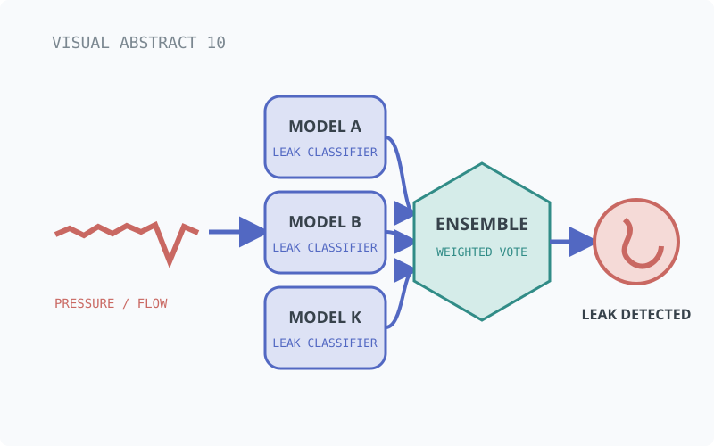

4 FIRST-AUTHOR / 6 LAST-AUTHOR PAPERS
Lead-author methods establish the decision-focused core; last-author collaborations extend it across generative trajectories, constrained control, industrial energy prediction, and water-system monitoring.
Google Scholar · ORCID · ResearchGate
01 / FIRST-AUTHOR PAPERS

FIRST AUTHORIEEE TSG · 2025
Shunyu Wu, Jingcheng Wang, Haotian Xu, Yanjiu Zhong, and Jun Rao
A probabilistic forecast is trained with a differentiable convex upper bound on downstream optimality gap, connecting forecast distributions to stochastic scheduling cost.

FIRST AUTHORESWA · 2024
Shunyu Wu, Jingcheng Wang, Haotian Xu, Shangwei Zhao, and Jiahui Xu
Lag-penalty attention and a masked weighted Markov chain correct delayed responses and selected residuals near demand turning points.

FIRST AUTHORIEEE TCSS · 2024
Shunyu Wu, Jingcheng Wang, Haotian Xu, Shangwei Zhao, and Jiahui Xu
The Coder learns the pressure response to measured variables, while the Critic represents residual variation associated with unobserved disturbances.

FIRST AUTHORCCC · 2021
Shunyu Wu, Pingwei Zhao, Miaoshun Bai, Jingcheng Wang, and Yang Lan
The method forecasts cumulative daily demand, then uses fine-grained division, search, and prediction to reconstruct an approximately 300-step minute-level profile.
02 / LAST-AUTHOR PAPERS

LAST AUTHORESWA · 2026
Jinyang Zhao, Handong Zheng, Yanjiu Zhong, Qiang Zhang, and Shunyu Wu
A graph memory stores local LiDAR geometry and retrieves waypoint-specific context during recurrent diffusion denoising.

LAST AUTHORIEEE TSMC · 2024
Jiahui Xu, Jingcheng Wang, Yanjiu Zhong, Jun Rao, and Shunyu Wu
Nonlinear model predictive control initializes the controller network, while a control barrier function and nonquadratic loss enforce state and input constraints.

LAST AUTHORIEEE TASE · 2024
Yanjiu Zhong, Jingcheng Wang, Jun Rao, Jiahui Xu, and Shunyu Wu
A DCLS-Net models each rolling step, and series concatenation suppresses accumulated prediction error across the multi-step process.

LAST AUTHORIEEE CDC · 2023
Jun Rao, Jingcheng Wang, Jiahui Xu, and Shunyu Wu
Multiple eligibility-trace time scales supply the critic with complementary temporal credit signals for adaptive optimal control.

LAST AUTHORIFAC · 2023
Tzuyi Kan, Jingcheng Wang, and Shunyu Wu
CEEMDAN reduces sensor noise, pump-state signals add operating context, and gradient correction supports longer-horizon GRU prediction.

LAST AUTHORCCC · 2021
Shuwei Zhang, Miaoshun Bai, Jingcheng Wang, Haotian Xu, and Shunyu Wu
An improved multi-model weighted voting mechanism combines deep classifiers to locate leakage events in a simulated water-distribution network.